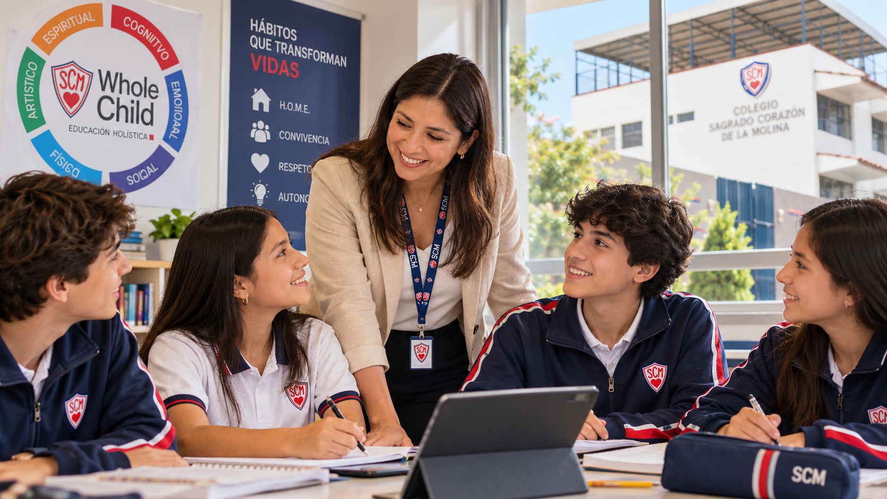

Módulo 2 · Relaciones Interpersonales
Construimos vínculos que fortalecen el aprendizaje
Explora estrategias para promover el trabajo en equipo, manejar emociones y fortalecer relaciones interpersonales en la práctica docente.
